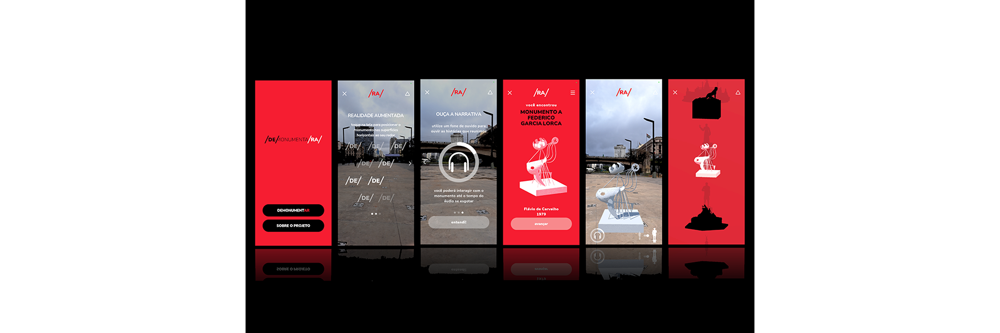
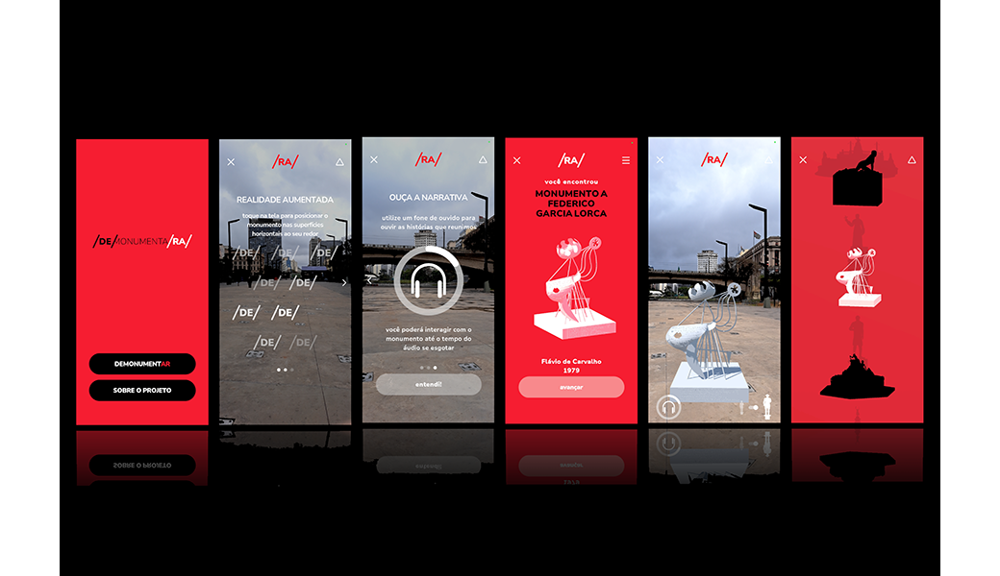
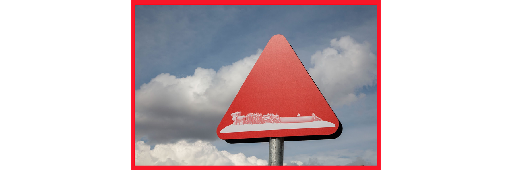
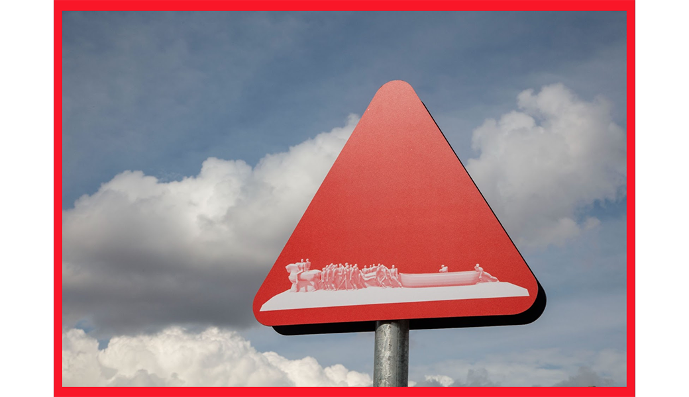
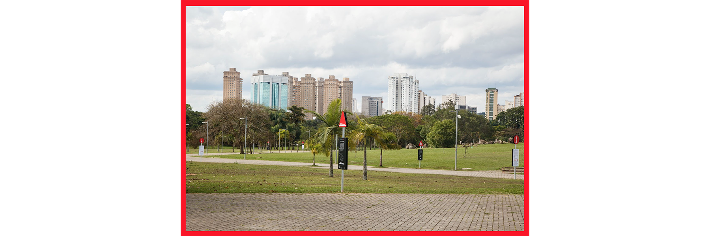
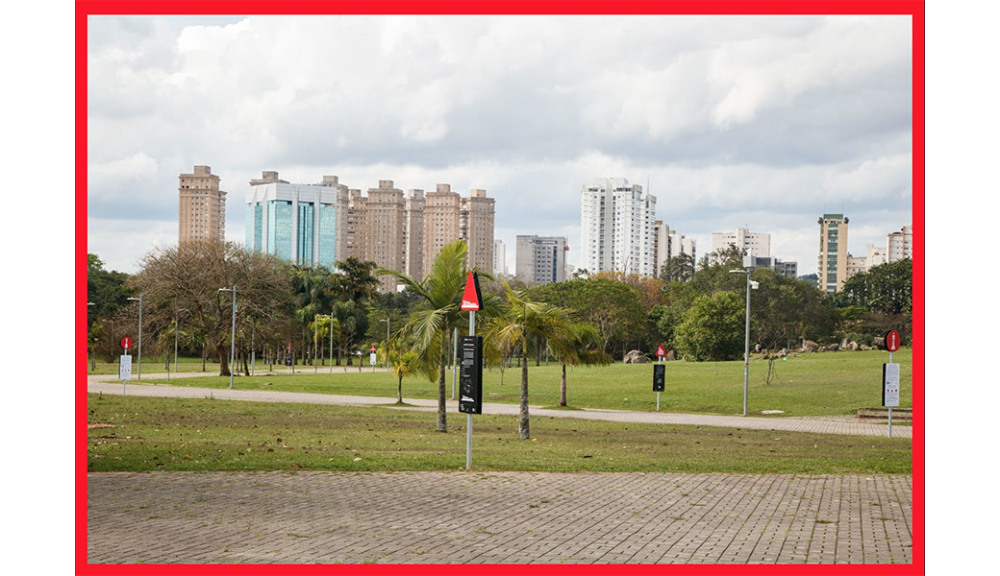
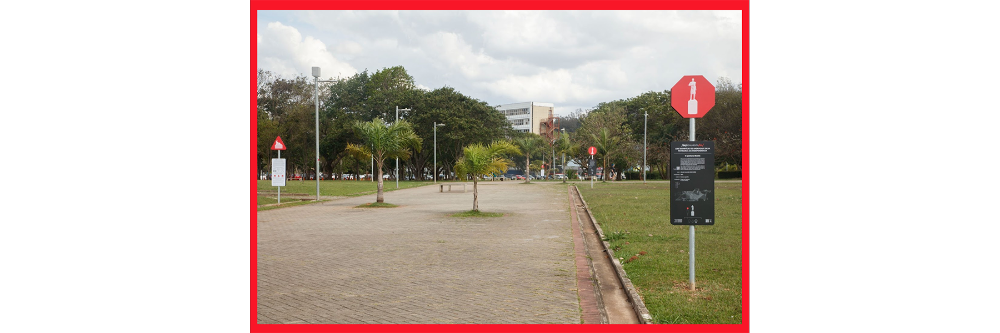
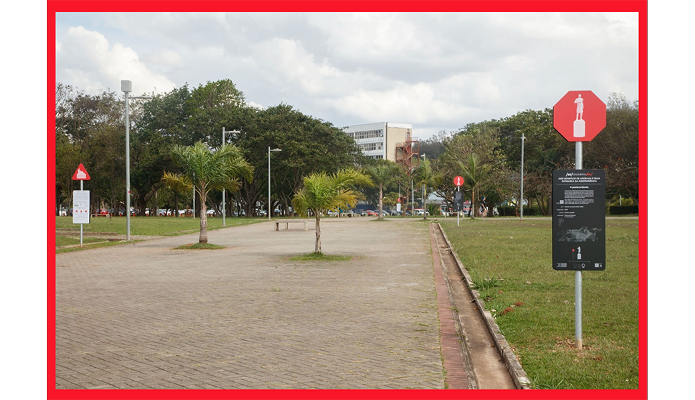
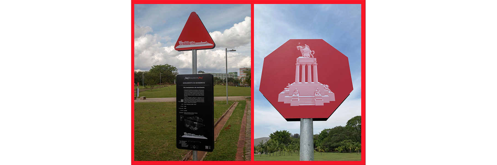
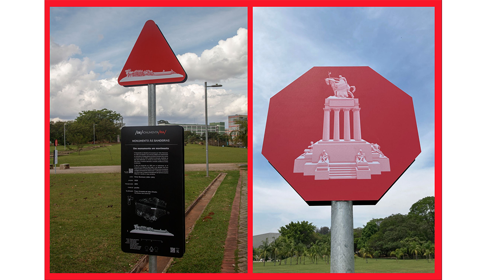
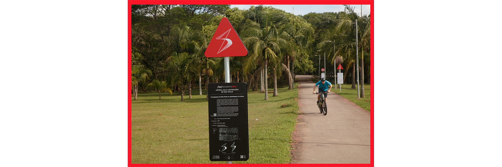
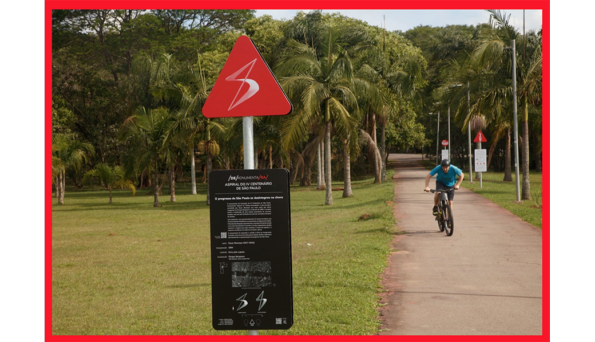
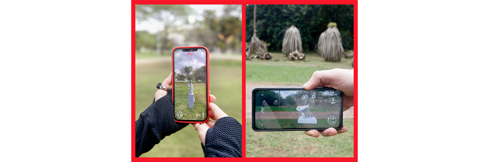
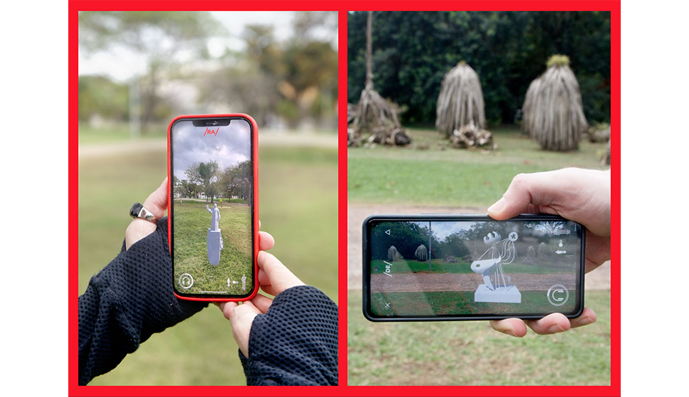
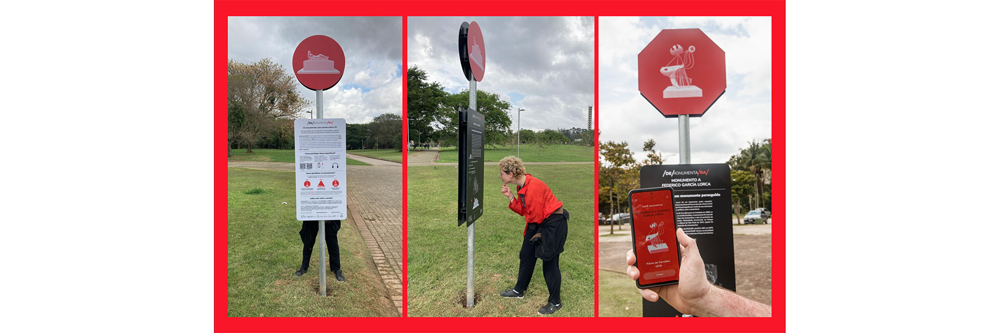
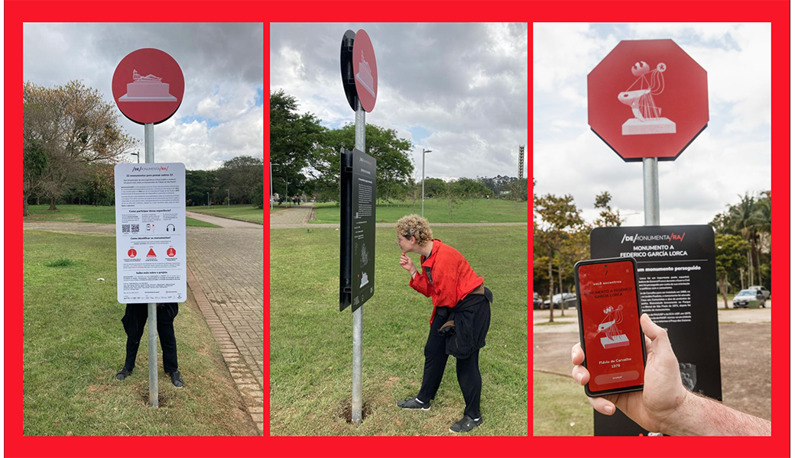
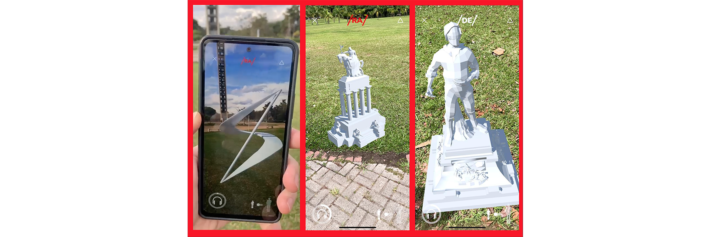
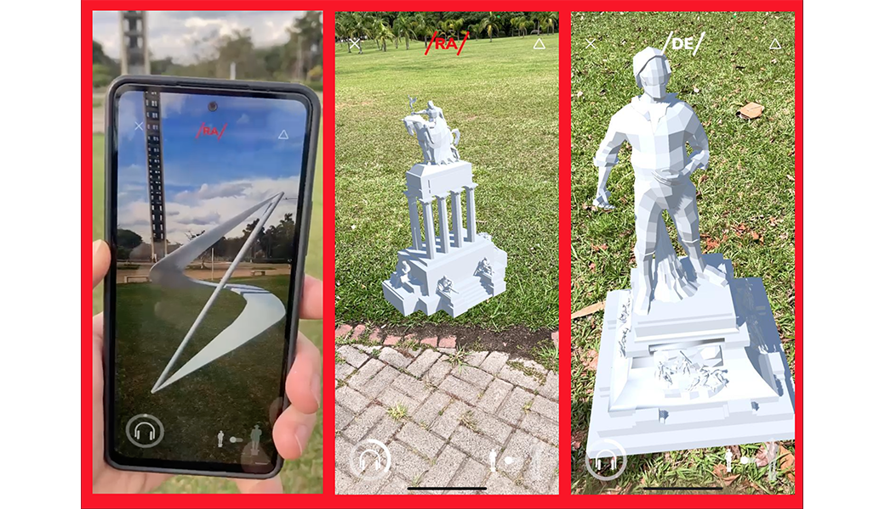
/de/monument/RA/ is an original and free app, with audio guides, that has access 3D models of 22 monuments in the city. The focus of the project is on the monuments created for the celebrations of 1922, including the reverberations of the Week of Modern Art and the Centennial of Independence in the subsequent decades, such as 1954, the year of the IV Centenary of the City of São Paulo, and in 1972, the controversial date of the sesquicentennial of Independence, promoted by the military dictatorship under the government of Emilio Garrastazu Médici.
The app is the result of a teaching, research, and extension project, developed entirely at FAUUSP, involving undergraduate and graduate students from the courses of Architecture and Design, with the participation of other units such as IME (Institute of Mathematics and Statistics) and the Paulista Museum of USP.
It proposes a reflection on historical heritage, from a transversal approach to knowledge, without prioritizing theory over practice, and the role of the student and the teacher. The project considers the public university in dialogue with society, combining historical research and digital technologies through a playful, interactive, and pedagogical experience.
The project won awards at Deutsches Museum, ZKM, IAB SP, Games for Change Latin America and Latin American Design Awards.